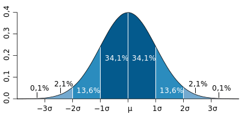
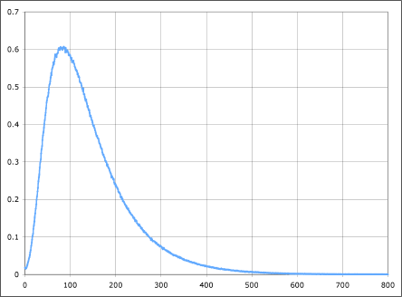
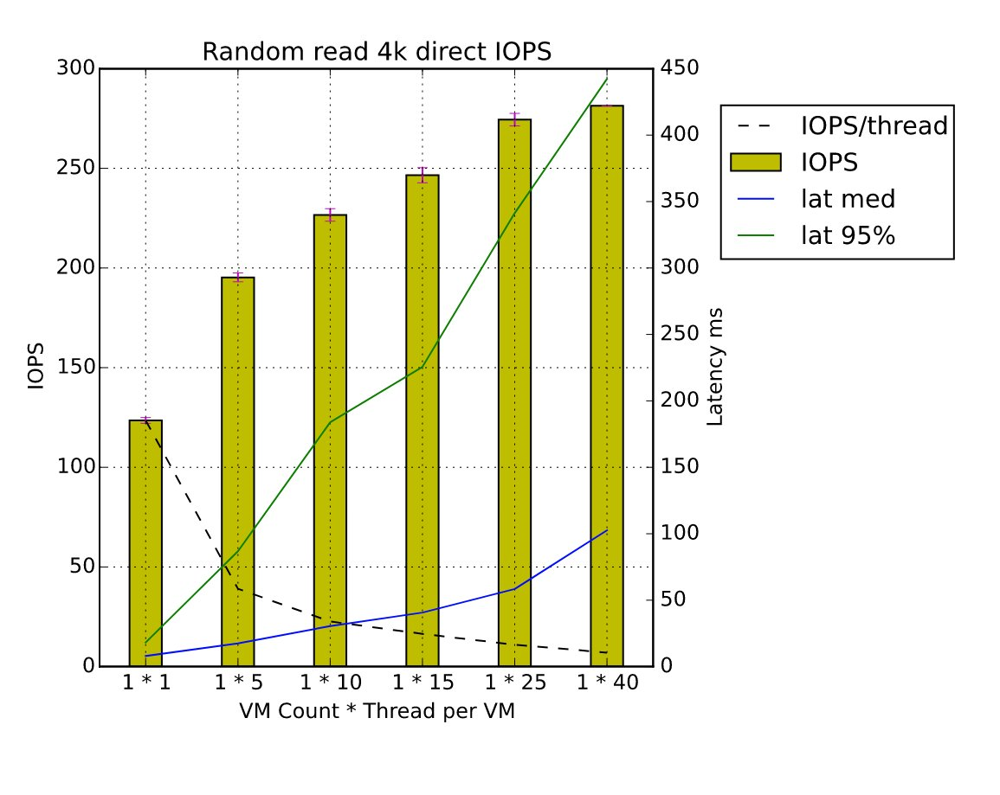
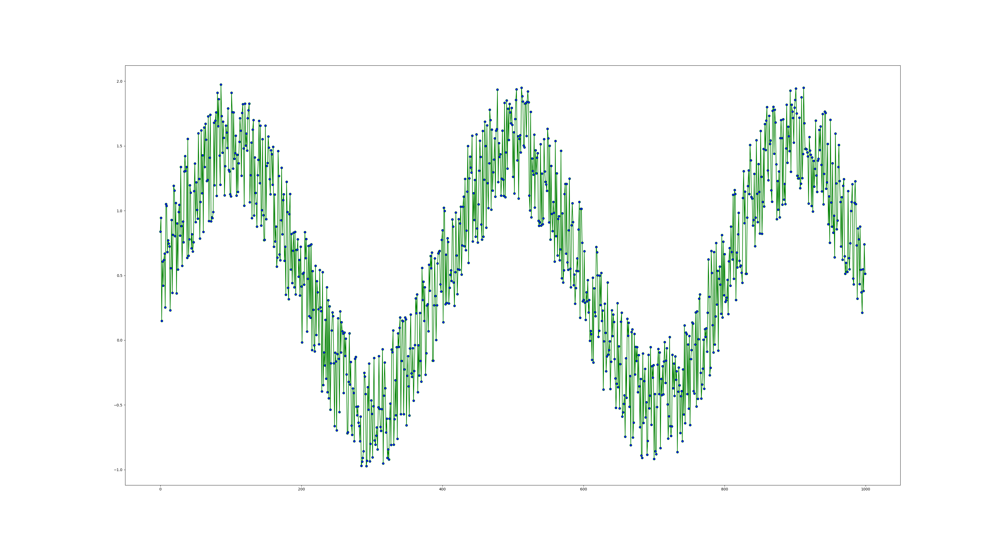
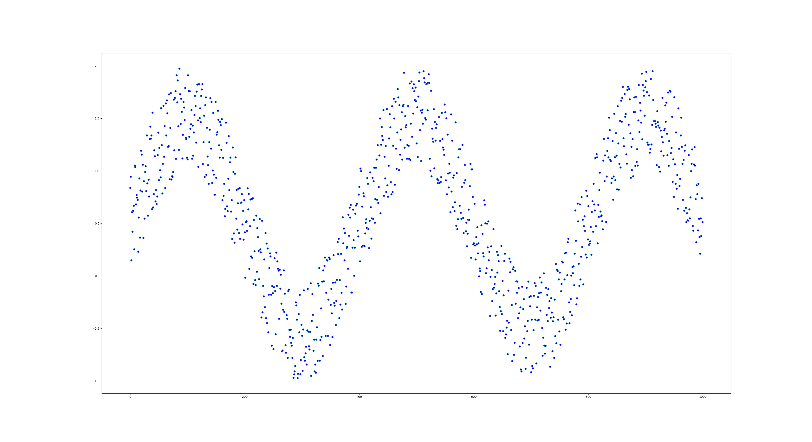
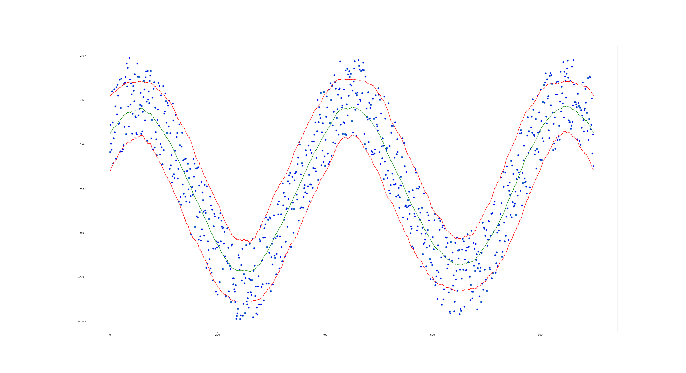

class: center, middle ## Воспроизводимость ## Релевантность ## Прозрачность --- class: center, middle ## 42.463738 ??? * Как проводить эксперименты - всегда есть ошибка * Обычно ошибка от погрешности измерения, В IT ошибка из-за черного ящика --- class: center, middle ## 42 ??? Провели тест и получили число А потом провели его еще раз и получили 45 или на новой версии получили 45 Что-то поменялось? --- class: center ## Однако process pinning hyper threading off turbo boost off --- class: center, middle ## 42 ~ 4 ??? Правильные вопрос: Какая вероятность, что эти ответы пришли из выборок со средними, отличающимися на вот столько Персентили.... --- class: center, middle  --- class: center, middle  ??? Имея распределение можно сравнивать итоги тестов и примерно прикинуть сколько тестов делать Распределение помогает увидеть странности и понять что мы тестирует не то, что нужно --- class: center, middle  ??? С ростом параллелизма нагрузки латентность растет и операции в секунду тоже --- class: center, middle ## Релевантность ### Тестируем "родной" нагрузкой ??? * Если нагрузка меняется - тесты в трубу * Нагрузки может и не быть * Сложно понять куда грести --- class: center, middle ### Низкоуровневые тесты ### высокоуровневые тесты ### неправильные тесты --- class: center, middle ## высокоуровневые тесты ??? * Если нагрузка меняется - тесты в трубу * Нагрузки может и не быть * Сложно понять куда грести --- class: center, middle ### TPC-A/TPC-B/TPC-E ### SPC-1/SPC-2 ### ... --- ### Низкоуровневые тесты ### Большое пространство перебора * QD (client count) * R/W % * Block size * Test len ??? Зачастую можно уменьшить размер перебора построив модель Например для дисков --- class: center, middle op_time = bsize / BW + lat0 iops = 1/op_time --- class: center, middle ## Мониторинг системы во время тестов ??? * Нужно понимать что мы тестируем * Нужно видеть нагрузку там, где мы ее ожидаем * mongodb python module --- class: center, middle ### perf top/record --- ## Визуализация * matplotlib * pandas * seaborn * ... ??? * Визуальные данные == мы не знаем что с этим делать * Максимальная постобработока * Но храним всю собранную статистику --- class: center, middle  --- class: center, middle  --- class: center, middle  --- ```python from matplotlib import pyplot from pandas import Series size = 1000 window = 0.1 * size data = numpy.sin(numpy.arange(size) / size * 5 * numpy.pi) data += numpy.random.rand(size) sz = Series(data) rstd = sz.rolling(window, center=False).std()[window:].values rm = sz.rolling(window, center=False).mean()[window:].values pyplot.plot(data[window // 2: -window // 2], 'o', markerfacecolor='blue') pyplot.plot(rm, color='green') pyplot.plot(rm + rstd, color='red') pyplot.plot(rm - rstd, color='red') pyplot.show() ```